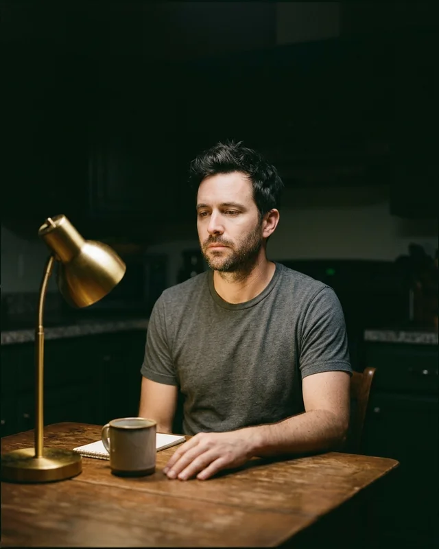
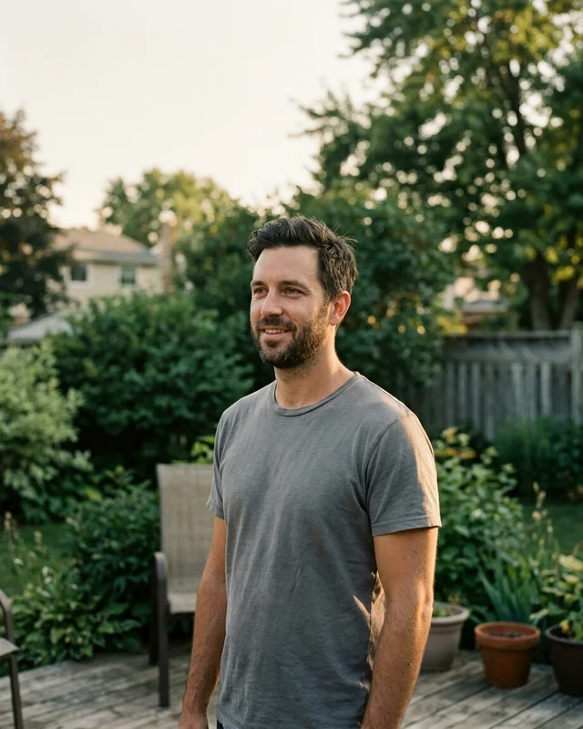

Timeline you picked

Reconstructed

tuesday. going through the box from my mom's attic. not opening the blue one
Did he make the right call?
71%
Voting reopens every 90 seconds. 4,113 ballots this stream.